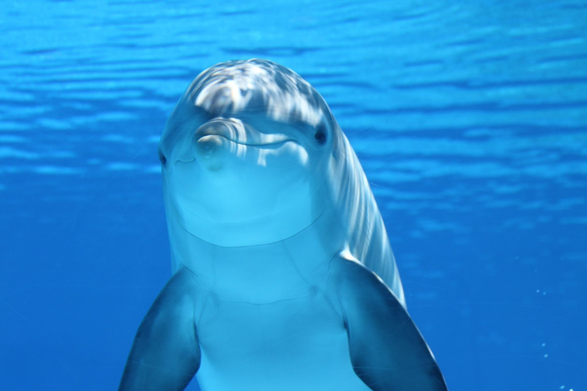

| The chapters | The pages | Topic |
|---|---|---|
| Chapter 1 | Page 1 | The call of the ocean |
| Chapter 2 | Page 1 | The Glass Bottle |
| Chapter 3 | Page 1 | The Guardian of the Deep |
| Chapter 4 | Page 1 | The Glowing Horizon |
Leo had always lived in the shadow of the great cliffs, far from the shore.
Yet, every night, the sound of the wind brought distant echoes—a mysterious whisper calling him toward the endless blue,
At age twenty, he finally packed a small bag, locked his wooden cabin
and walked down the winding path toward the roaring ocean, eager to discover what lay beyond the horizon.
Shadow of the great cliffs:Near big, steep rocks that block the sun
Distant echoes: Sounds that come from far away.
Winding path: A road or trail that twists and turns a lot.
Roaring ocean: The sea making a loud, deep, angry sound.
Horizon: The line far away where the sky meets the sea or land.
On his first morning by the beach, the morningtide washed a strange, weathered glass bottle
onto the golden sand. Inside was a piece of parchment with faded ink, detailing a map of an
uncharted island where the sea supposedly glowed at night. Intrigued by the mystery, Leo
decided to repair an old wooden boat he found resting near the docks and set sail in search of
the glowing waters.
Tide: The regular rising and falling of the ocean's water level.,
Weathered: Old and damaged by wind, rain, or sun.
Parchment: An old type of thin material used for writing before paper was common
Faded ink: Writing that is losing its color and is hard to see clearly.
Uncharted island: An island that is not shown on any map
Supposedly: Believed to be true, but not 100% proven.
Intrigued: Very interested and curious to know more.
Docks: Platforms built by the water where boats stop and park.
As Leo sailed further into the open sea, the sky turned a deep shade of violet, and the waves
grew taller. Suddenly, a magnificent pod of dolphins surrounded his boat, guiding him safely
through a dangerous maze of sharp coral reefs. It was as if the ocean itself recognized his
pure intent and decided to protect him on his journey.
Pod of dolphins: A group of dolphins swimming and living together.
Maze: A confusing puzzle of paths where it is easy to get lost.
Coral reefs: Hard, colorful ridges under the sea made by tiny sea animals.
Pure intent: A good, honest, and kind purpose or goal.
After three days at sea, Leo reached the coordinates marked on the map. As night fell, the dark
water began to sparkle with brilliant, luminescent blue lights, mirroring the stars above. He
realized then that the sea was not just a body of water, but a living, breathing storyteller,
rewarding those brave enough to listen to its gentle waves.
Coordinates: Numbers that show the exact location of a place on a map.
Luminescent: Glowing with soft light in the dark.
Mirroring: Reflecting something like a mirror (copying its look).
Body of water: A significant amount of water, like a sea, lake, or ocean.
Instead of turning back toward the cliffs, Leo decided to dive into the glowing water to see what
created the soft blue light. Below the surface, he found a quiet underwater garden where silver
fish swam like shooting stars and ancient stone ruins rested peacefully on the seabed. As he
reached out toward a glowing shell, the ocean seemed to share a memory with him—a song of
sailors who once sailed these waters centuries ago, warning of a storm that never truly ended.
When Leo surfaced, a tall, calm figure stood near the edge of the glowing cove, watching the
water rise and fall with steady breathing. The stranger introduced himself as Rowan, the keeper
of the tide, who explained that the glowing sea only appeared to those who respected its
rhythm rather than trying to conquer it. Yet just as Leo began to trust him, the silver light
abruptly went out, a low rumble shook the ground beneath their feet, and a massive, shadowed
archway appeared from the receding water—signaling that the real test had only just begun.